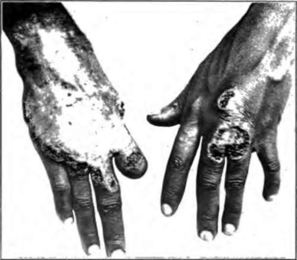
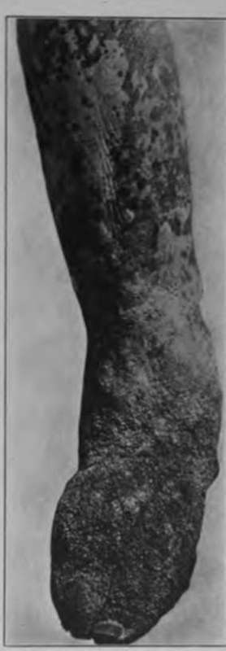
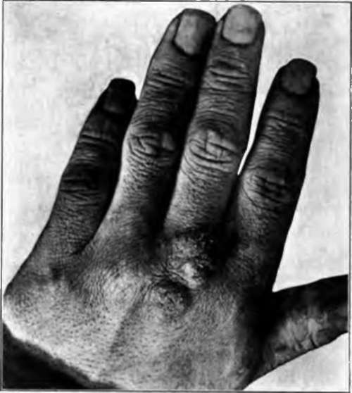

2. Ulcerative Lesions
Description
This section is from the book "Skin Cancer", by Henry H. Hazen, A.B., M.D.. Also available from Amazon: Skin Cancer.
2. Ulcerative Lesions
The ulcerative lesions are usually easy to differentiate, for they too lack many of the physical characteristics of cancer-namely, the hard edge, with the pearly nodules therein.
Lupus Vulgaris
Lupus vulgaris (Fig. 64) usually originates in the young; it is very rare to find a case starting in a patient over 20 years of age. The growth of the ulcer is slow, although not slower than that of a rodent ulcer. One characteristic of a tuberculous ulcer is the overhanging edge of skin, the ulcer not being cleanly punched out (Fig. 65). In some instances healing may take place in the center, leaving a comparatively superficial soft scar. A section taken from the edge of a patch of lupus will show that the condition is an inflammatory one, and the presence of giant, but more especially endothelioid, cells may be characteristic. The edge is never stony hard. It is surprising to see how often rodent ulcers are diagnosed as lupus, for in reality there is no excuse for this mistake.
Chancre
A chancre rarely ulcerates extensively enough to be mistaken for an ulcerated cancer; it is only in the nodular type that trouble may arise.
Fig. 63.-Gummatous lesion of the Up. No induration at edges. (Author's collection).
Syphilis
Syphilitic ulcerations, especially of the serpiginous type, where growth is slow at times, can be mistaken for an extremely superficial rodent ulcer, but the condition of the edge should serve to differentiate between them, for the syphilitic lesion does not have the great hardness and comparatively deep infiltration of the cancerous one. A biopsy would decide the question beyond all shadow of doubt, for syphilis, in its histological aspects, does not simulate cancer.
Traumatic Ulcers
Traumatic ulcers lack the hardness of canccr, although they may become cancerous under very exceptional circumstances. A rapid growth of papillomatous tissue resembling a dirty granulation tissue, but more anemic and less vascular, would make one very suspicious of beginning malignant change. The same holds true of varicose ulcers.
Sporotrichosis
The lesions of sporotrichosis* are usually multiple, and follow the course of the lymphatic vessels; in addition the causal organism can be demonstrated. Most of the other granulomatous affections are acquired in tropical or semitropical countries, and in persons who have lived in them such conditions must be excluded, which is usually not difficult, for the condition of the edge of the growth is a sure sign to guide one. 3. Papillary Lesions.-Most of the papillary lesions should not cause trouble, but occasionally they do, especially to one who has not seen many of them.
Fig. 64.-Lupus vulgaris, showing spontaneous healing in center. Eight years' duration. (Author's collection).
*Hyde and Davis: Jour. Cutan. Dis., 1910, xxvlli, 321
Diffuse Papillomatosis
One condition that is not generally recognized even by experienced clinicians is the diffuse papillomatosis of the skin caused by an irritating discharge. Fig. 66 shows a very extreme form of it, but it is often seen in milder forms, especially around chronic leg ulcers in which there has been much weeping. The common venereal warts are the most familiar examples of this condition; other illustrations are the so-called dermatitis vegetans and pemphigus vegetans, in both of which conditions a discharge has set up a proliferation of epithelial tissue.
Fig. 66.-Tuberculous ulceration. (Randolph's case).
Exuberant Granulation
Ordinary exuberant granulation tissue is occasionally mistaken, but should not be, for it is of a different color, lacking the dirty-white splotched appearance that cancerous tissue assumes, and also totally lacking the induration.
Granuloma Pyogenicum
The condition known as granuloma pyogenicum* is simply an excess of granulation tissue caused by an infecting microorganism, and might be confused with sarcoma, but never with earcinoma; the extreme tenderness and lack of induration in the growth should serve to differentiate it from either condition.
*Wile: Jour. Cutan. Dis., 1910, xxvlll. 663.
Fig. 66.-Diffuse papillomatosis of skin. (Author's collection).
Tuberculosis Verrucosa Cutis
Tuberculosis verrucosa cutis (Fig. 67) could be mistaken only by a tyro, for, as a general rule, the surface epithelium is almost intact, the lesions lack depth and induration, and are almost invariably multiple.
Blastomycosis
Blastomycosis* (Fig. 68) usually causes a true papillomatous overgrowth of the skin; between the verrucose projections are minute abscesses containing pus, in which it is usually easy to demonstrate the causative organism. The color is often purplish, and there is a lack of deep infiltration, the condition feeling soggy, rather than indurated. The lesions are usually multiple, and there may be a number of minute abscesses in the skin beyond the limits of the lesions proper.
Fig. 67.-Tuberculosis verrucosa cutis. (Author's collection).
Yaws And Syphilis
In either yaws or frambesiform syphilis the lesions are invariably multiple and lack deep induration; they are apt to be most pronounced on the face and around the genitalia or axillae.
Continue to:
Tags
bookdome.com, books, online, free, old, antique, new, read, browse, download